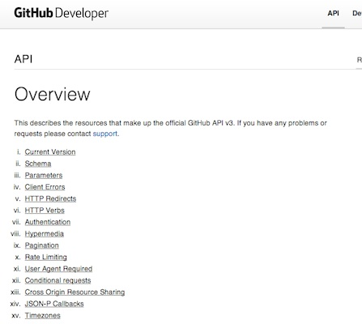
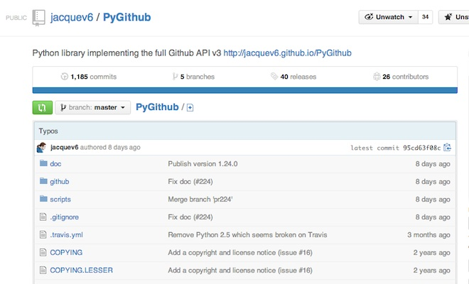
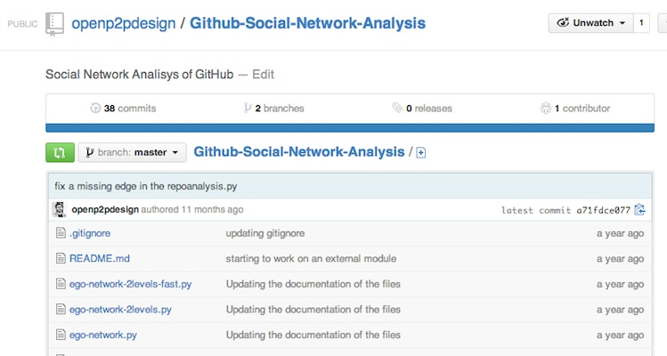

Open Project Management
13 March 2014
1. GitHub SNA
2. Exercise
1. GitHub SNA
GitHub: API
Source: http://developer.github.com/v3/
pyGitHub
Install pyGithub
pip install pygithub
My scripts...
Source: https://github.com/openp2pdesign/Github-Social-Network-Analysis
My scripts... #01
- ego-network.py:
- ego-network-2levels.py:
- ego-network-2levels-fast.py:
- repoanalysis.py:
- single_repository_social_mining.py:
- single_repository_social_mining_weighted.py:
My scripts... #01
- organization_ego-network.py:
- organization_ego-network-2levels.py:
- organization_repository_analysis.py:
- organization_repository_social_mining.py:
- organization_repository_social_mining_weighted.py:
- organization_repositories_social_mining_weighted.py:
2. Exercise
Exercise: analyse a GitHub username personal network
- Analyze Degree, Betweenness, Closeness, Eigenvector. Modularity with 5 maps
- Write a 2 page report (with images)
- Send it to info@openp2pdesign.org
Exercise: analyse a GitHub repository personal network
- Analyze Degree, Betweenness, Closeness, Eigenvector. Modularity with 5 maps
- Write a 2 page report (with images)
- Send it to info@openp2pdesign.org
Thank you!
Massimo Menichinelli / info@openp2pdesign.org / @openp2pdesign

This work is licensed under a Creative Commons Attribution 3.0 Unported License.
Massimo Menichinelli - 2013
openp2pdesign.org